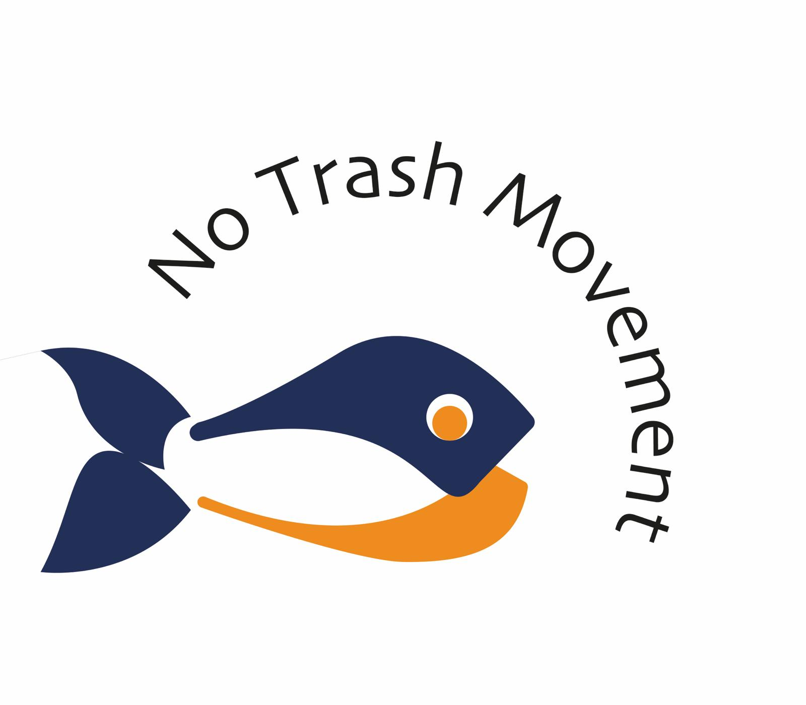

- 
- Useful Facts
- Recycling Tips
- About us
About us
Welcome to No trash movement!
We are the J’s - a group of women living and studying in Leeds who are passionate about waste reduction and environmental protection. Our mission is to share this passion with you with useful tips and ideas to help you make a positive impact on the planet.
We are culture of tree-huggers whose focus is to constantly find and share creative and simple ways to protect the planet. We believe in combining sustainability and innovation to achieve this.
The team:
Jayne Cunnigham
Known for my positive energy and enthusiasm, and creative thoughts, finding joy in pushing the boundaries, and not afraid to challenge convention to solve an issue.
I'm a planet-centric designer focused on purpose-driven design, cultural change and innovating for the outcome of different and better.
My Linkedin: https://www.linkedin.com/in/jrcunningham/
Jessica Hopkin
Jorobo Drammeh
I am a youth work and community development student at the Leeds Beckett University and work part-time with children in care.
I am very enthusiastic person who is highly committed in protecting the environment for the benefit of all.